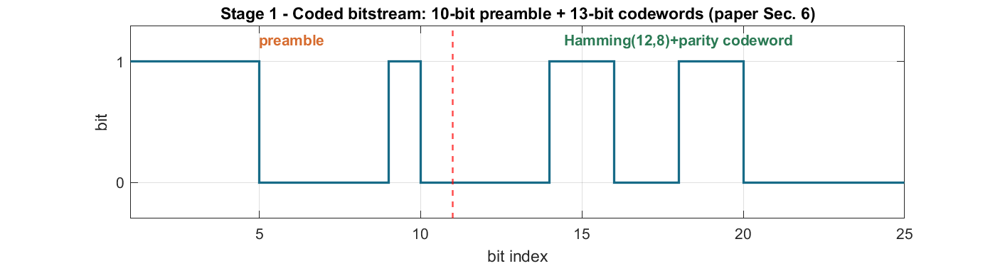

01
Paper Sec. 6 — OWC transmitter
Coded bitstream
What the paper says
The OWC driver turns text into 8-bit ASCII, then a 12-bit Hamming(12,8) code plus one parity bit (a 13-bit codeword), and prepends a 10-bit preamble 1111000010 for packet detection.
Signal & variables
A bit vector frame_bits = preamble + 13-bit codewords. Parameters p.preamble, p.code_len.
MATLAB files
build_frame.mencode_text.mencode_byte.mhamming_12_8.mlt_params.m
